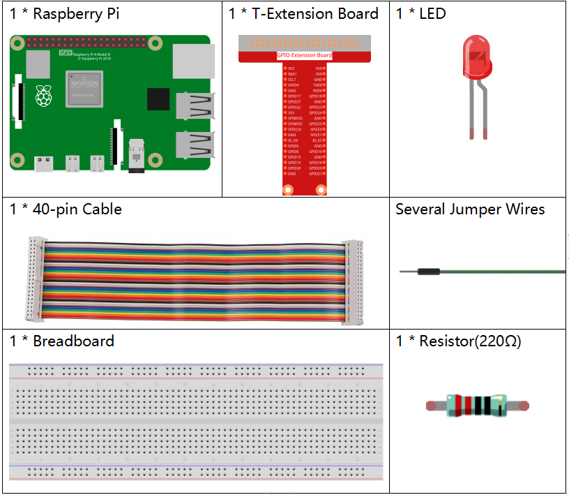

Nota
Ciao, benvenuto nella Community di appassionati di SunFounder per Raspberry Pi, Arduino ed ESP32 su Facebook! Approfondisci le tue conoscenze su Raspberry Pi, Arduino ed ESP32 insieme ad altri appassionati.
Perché unirti a noi?
Supporto Esperto: Risolvi problemi post-vendita e sfide tecniche con l’aiuto della nostra community e del nostro team.
Impara e Condividi: Scambia suggerimenti e tutorial per migliorare le tue abilità.
Anteprime Esclusive: Ottieni accesso anticipato alle novità sui prodotti.
Sconti Speciali: Approfitta di sconti esclusivi sui nostri nuovi prodotti.
Promozioni e Concorsi: Partecipa a concorsi e promozioni festive.
üëâ Pronto a esplorare e creare con noi? Clicca su [Qui] e unisciti oggi!
1.1.1 LED Lampeggiante
Introduzione
In questa lezione impareremo a far lampeggiare un LED programmando. Attraverso le tue impostazioni, il LED può produrre una serie di effetti interessanti. Ora, inizia subito!
Componenti
{kind=link}
Nota
Per procedere senza problemi, è necessario disporre di un Raspberry Pi, una scheda TF e l’alimentazione per Raspberry Pi.
Principio
Breadboard
La breadboard è una base per prototipi utilizzata per costruire e testare rapidamente circuiti elettronici prima di completare il design definitivo. È dotata di numerosi fori in cui è possibile inserire componenti come IC, resistenze e fili jumper, consentendo di collegare e scollegare facilmente i componenti.
L’immagine mostra la struttura interna di una breadboard completa. Sebbene i fori sembrino indipendenti tra loro, sono in realtà collegati tramite strisce metalliche.

LED
Il LED è un tipo di diodo e brilla solo se il pin lungo del LED è collegato al polo positivo e il pin corto al polo negativo.

Il LED non può essere collegato direttamente all’alimentazione, poiché potrebbe danneggiarsi. È necessario inserire in serie una resistenza di almeno 160Ω (a 5V) nel circuito del LED.
Resistenza
La resistenza è un elemento elettronico che limita la corrente. Una resistenza fissa ha un valore non modificabile, mentre il potenziometro o la resistenza variabile possono essere regolati.
Nella confezione trovi una resistenza fissa, essenziale per proteggere i componenti collegati. Di seguito sono riportati una resistenza da 220Ω e due simboli usati nei circuiti. Ω è l’unità di misura della resistenza; le unità superiori sono KΩ e MΩ. Le relazioni sono: 1 MΩ = 1000 KΩ e 1 KΩ = 1000 Ω. Il valore della resistenza è generalmente indicato. Se vedi questi simboli in un circuito, significa che c’è una resistenza.


Per usare una resistenza, è importante conoscerne il valore. Puoi osservare le bande colorate sulla resistenza o usare un multimetro. Si consiglia il primo metodo per comodità. Per misurare il valore, usa un multimetro.
Come mostrato nella tabella, ogni colore rappresenta un numero.

Diagramma Schematico
In questo esperimento, collega una resistenza da 220Ω all’anodo (pin lungo) del LED, poi la resistenza a 3,3V e il catodo (pin corto) del LED a GPIO17 del Raspberry Pi. Per accendere il LED, bisogna impostare GPIO17 su livello basso (0V), ottenibile tramite programmazione.
Nota
Pin11 si riferisce all’undicesimo pin del Raspberry Pi da sinistra a destra. I numeri corrispondenti wiringPi e BCM sono riportati nella seguente tabella.
Nel contesto del linguaggio C, GPIO0 equivale a 0 in wiringPi. In Python, BCM 17 corrisponde al numero 17 nella colonna BCM della tabella seguente. Entrambi corrispondono all’11° pin del Raspberry Pi, Pin 11.
T-Board Name |
physical |
wiringPi |
BCM |
GPIO17 |
Pin 11 |
0 |
17 |

Procedura dell’Esperimento
Passaggio 1: Assembla il circuito.

Per gli Utenti del Linguaggio C
Passo 2: Vai alla cartella del codice.
Se utilizzi uno schermo, ti consigliamo di seguire questi passaggi.
Vai su ~/ e trova la cartella davinci-kit-for-raspberry-pi.
Trova C nella cartella, fai clic con il tasto destro e seleziona Apri in Terminale.

A questo punto, si aprirà una finestra come mostrato di seguito. Ora ti trovi nel percorso del codice 1.1.1_BlinkingLed.c.

Nelle lezioni successive, utilizzeremo i comandi per entrare nel file di codice, ma puoi scegliere il metodo che preferisci.
Se accedi al Raspberry Pi in remoto, usa
cdper cambiare directory:
cd ~/davinci-kit-for-raspberry-pi/c/1.1.1/
Nota
Cambia la directory al percorso del codice in questo esperimento tramite cd.
In entrambi i modi, ora ti trovi nella cartella C. Le procedure successive per entrambi i metodi sono le stesse. Andiamo avanti.
Passo 3: Compila il codice.
gcc 1.1.1_BlinkingLed.c -o BlinkingLed -lwiringPi
Nota
gcc è il GNU Compiler Collection. Qui viene usato per compilare il file C 1_BlinkingLed.c e generare un file eseguibile.
Nel comando, -o indica l’output (il carattere immediatamente successivo
a -o è il nome del file generato dopo la compilazione, e qui verrà creato un
eseguibile chiamato BlinkingLed) e -lwiringPi serve a caricare la
libreria wiringPi (l sta per library).
Passo 4: Esegui il file eseguibile creato nel passaggio precedente.
sudo ./BlinkingLed
Nota
Per controllare i GPIO, è necessario eseguire il programma con il comando
sudo (superuser do). Il comando ./ indica la directory corrente. Il
comando completo serve a eseguire BlinkingLed nella directory corrente.

Dopo aver eseguito il codice, vedrai il LED lampeggiare.
Nota
Se non funziona dopo l’esecuzione o compare un messaggio di errore: "wiringPi.h: No such file or directory", consulta Il codice C non funziona?.
Se desideri modificare il file di codice 1.1.1_BlinkingLed.c, premi Ctrl + C per interrompere l’esecuzione. Quindi digita il comando seguente per aprirlo:
nano 1.1.1_BlinkingLed.c
Nota
nano è un editor di testo. Il comando viene utilizzato per aprire il
file di codice 1.1.1_BlinkingLed.c con questo strumento.
Premi Ctrl+X per uscire. Se hai modificato il codice, apparirà un prompt
che ti chiederà se salvare le modifiche. Digita Y (salva) o N (non salvare).
Poi premi Enter per uscire. Ripeti il Passo 3 e Passo 4 per vedere il
risultato dopo la modifica.
{kind=link}
Codice
Il codice del programma è mostrato di seguito:
#include <wiringPi.h>
#include <stdio.h>
#define LedPin 0
int main(void)
{
// Quando l’inizializzazione di wiring fallisce, mostra un messaggio
if(wiringPiSetup() == -1){
printf("setup wiringPi failed !");
return 1;
}
pinMode(LedPin, OUTPUT); // Imposta LedPin come output per scriverne il valore.
while(1){
// LED acceso
digitalWrite(LedPin, LOW);
printf("...LED on\n");
delay(500);
// LED spento
digitalWrite(LedPin, HIGH);
printf("LED off...\n");
delay(500);
}
return 0;
}
Spiegazione del Codice
include <wiringPi.h>
La libreria hardware di wiringPi è progettata per il linguaggio C del Raspberry Pi. L’aggiunta di questa libreria facilita l’inizializzazione dell’hardware e la gestione delle porte I/O, PWM, ecc.
#include <stdio.h>
Libreria di I/O standard. La funzione printf, utilizzata per visualizzare dati sullo schermo, è implementata in questa libreria. Ci sono molte altre funzioni che puoi esplorare.
#define LedPin 0
Il Pin GPIO17 della T_Extension Board corrisponde a GPIO0 in wiringPi. Assegna GPIO0 a LedPin, che rappresenta GPIO0 nel codice.
if(wiringPiSetup() == -1){
printf("setup wiringPi failed !");
return 1;
Inizializza wiringPi assumendo che il programma utilizzi la numerazione dei pin di wiringPi. La funzione necessita di privilegi di root.
Se l’inizializzazione fallisce, stampa un messaggio. “return” è usato per uscire dalla funzione corrente. Usare return in main() termina il programma.
pinMode(LedPin, OUTPUT);
Imposta LedPin come uscita per scrivere valori.
digitalWrite(LedPin, LOW);
Imposta GPIO0 a 0V (livello basso). Poiché il catodo del LED è collegato a GPIO0, questo si accenderà se GPIO0 è impostato a basso. Altrimenti, impostandolo a livello alto, digitalWrite (LedPin, HIGH), il LED si spegnerà.
printf("...LED off\n");
La funzione printf è una funzione di libreria standard e il suo prototipo si trova nel file di intestazione «stdio.h». La forma generale della chiamata è: printf(«stringa di controllo del formato», colonne della tabella di output). La stringa di controllo del formato è utilizzata per specificare il formato dell’output e si divide in stringhe formattate e non formattate. La stringa formattata inizia con il simbolo “%” seguito dai caratteri di formato, come “%d” per l’output di un intero decimale. Le stringhe non formattate vengono stampate così come sono. Qui viene utilizzata una stringa non formattata, seguita da «n», un carattere di nuova riga che consente l’andata a capo automatica dopo la stampa di una stringa.
delay(500);
Delay (500) mantiene lo stato corrente (ALTO o BASSO) per 500ms.
Questa funzione sospende il programma per un periodo. La velocità del programma è determinata dall’hardware. Senza questa funzione, il programma si eseguirebbe molto velocemente e in un loop continuo. Il ritardo aiuta nel debug e nello sviluppo del programma.
return 0;
Solitamente è posto alla fine di main per indicare che la funzione ritorna 0, segnalando l’esecuzione con successo.
Per Utenti Python
Passo 2: Vai nella cartella del codice ed eseguilo.
Se utilizzi uno schermo, segui i seguenti passaggi.
Trova 1.1.1_BlinkingLed.py e fai doppio clic per aprirlo.
Fai clic su Run -> Run Module nella finestra e appariranno i seguenti contenuti.
Per interrompere l’esecuzione, fai semplicemente clic sul pulsante X in alto a destra per chiudere la finestra, tornando così al codice. Se modifichi il codice, prima di cliccare su Run Module (F5) devi salvarlo. A quel punto potrai vedere i risultati.
Se accedi a Raspberry Pi da remoto, digita il comando:
cd ~/davinci-kit-for-raspberry-pi/python
Nota
Cambia la directory al percorso del codice con cd.
Passo 3: Esegui il codice
sudo python3 1.1.1_BlinkingLed.py
Nota
sudo esegue il file con privilegi di superuser, e python lancia il file in Python.
Dopo l’esecuzione, vedrai il LED lampeggiare.
Passo 4: Se desideri modificare il file di codice 1.1.1_BlinkingLed.py,
premi Ctrl + C per interrompere l’esecuzione del codice. Poi digita il
seguente comando per aprire 1.1.1_BlinkingLed.py:
nano 1.1.1_BlinkingLed.py
Nota
nano è un editor di testo. Questo comando apre il file con nano.
Premi Ctrl+X per uscire. Se hai modificato il codice, ti verrà chiesto di
salvare le modifiche. Digita Y (salva) o N (non salvare).
Premi Enter per uscire. Digita di nuovo nano 1.1.1_BlinkingLed.py per
vedere le modifiche.
Codice
Nota
Puoi Modificare/Reimpostare/Copiare/Eseguire/Interrompere il codice qui sotto. Prima di procedere, è necessario accedere al percorso del codice sorgente come davinci-kit-for-raspberry-pi/python.
import RPi.GPIO as GPIO
import time
LedPin = 17
def setup():
# Imposta la modalità GPIO su numerazione BCM
GPIO.setmode(GPIO.BCM)
# Imposta il pin LedPin come uscita con livello iniziale Alto (3.3v)
GPIO.setup(LedPin, GPIO.OUT, initial=GPIO.HIGH)
# Definisci una funzione principale per il processo principale
def main():
while True:
print ('...LED ON')
# Accende il LED
GPIO.output(LedPin, GPIO.LOW)
time.sleep(0.5)
print ('LED OFF...')
# Spegne il LED
GPIO.output(LedPin, GPIO.HIGH)
time.sleep(0.5)
# Definisci una funzione destroy per pulire tutto alla fine dello script
def destroy():
# Spegne il LED
GPIO.output(LedPin, GPIO.HIGH)
# Libera le risorse
GPIO.cleanup()
# Se esegui questo script direttamente, fai:
if __name__ == '__main__':
setup()
try:
main()
# Quando si preme 'Ctrl+C', verrà eseguita la funzione destroy().
except KeyboardInterrupt:
destroy()
Spiegazione del Codice
#!/usr/bin/env python3
Quando il sistema rileva questa linea, cercherà il percorso di installazione di Python nell’ambiente configurato e chiamerà l’interprete corrispondente per eseguire il programma. Questo previene problemi nel caso Python non sia installato in /usr/bin di default.
import RPi.GPIO as GPIO
Questa riga importa la libreria RPi.GPIO e definisce una variabile, GPIO, per sostituire RPi.GPIO nel codice.
import time
Importa il pacchetto time, necessario per la funzione di ritardo nel programma.
LedPin = 17
Il LED è collegato al pin GPIO17 della scheda di estensione a T, cioè BCM 17.
def setup():
GPIO.setmode(GPIO.BCM)
GPIO.setup(LedPin, GPIO.OUT, initial=GPIO.HIGH)
Imposta la modalità di LedPin come uscita e il livello iniziale come alto (3.3V).
In RPi.GPIO, ci sono due modi per numerare i pin di IO su Raspberry Pi: modalità BOARD e BCM. In queste lezioni, usiamo la modalità BCM. È necessario impostare ogni canale come ingresso o uscita.
GPIO.output(LedPin, GPIO.LOW)
Imposta GPIO17 (BCM17) a 0V (livello basso). Poiché il catodo del LED è collegato a GPIO17, il LED si accenderà.
time.sleep(0.5)
Ritarda per 0,5 secondi. Qui la dichiarazione rappresenta una funzione di ritardo in C, l’unità è in secondi.
def destroy():
GPIO.cleanup()
Definisce una funzione destroy per pulire tutto dopo la fine dello script.
if __name__ == '__main__':
setup()
try:
main()
# Quando si preme 'Ctrl+C', verrà eseguita la funzione destroy().
except KeyboardInterrupt:
destroy()
Questa è la struttura generale del codice. Quando il programma inizia a funzionare, inizializza il pin eseguendo setup(), poi esegue il codice in main() per impostare i livelli alto e basso sul pin. Quando si preme “Ctrl+C”, viene eseguita destroy() per chiudere il programma.
Immagine del Fenomeno